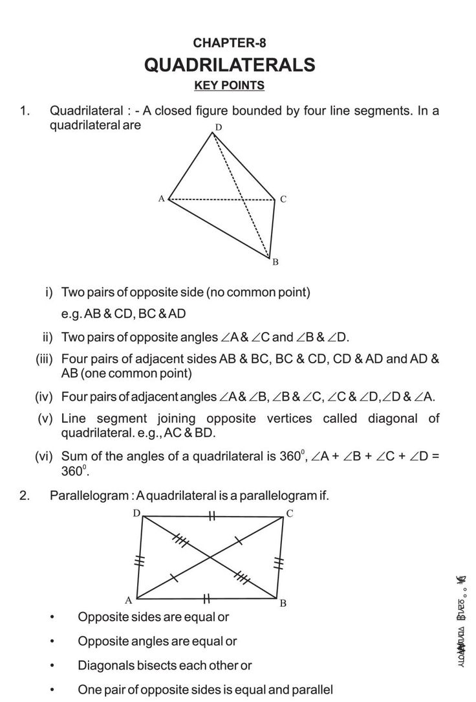

Üdvözlünk a NoteFlow-ban!
Hozzáférhető tananyagok, jegyzetek és multimédiás tartalmak.
Képek
Itt találhatók az oktatáshoz kapcsolódó képek.

Videók
Tekintsd meg az oktatóvideóinkat.
Egyetemi leckék
Fedezd fel a hozzáférhető leckéket és tananyagokat!
Előfizetések
Válassza ki az igényeinek megfelelő csomagot:
| Csomag | Ár |
|---|---|
| Alapcsomag | 25 RON/hó |
| Egyetemi csomag | 49 RON/hó |
| Családi csomag | 79 RON/hó |
| Prémium jegyzet | 250 RON/hó |